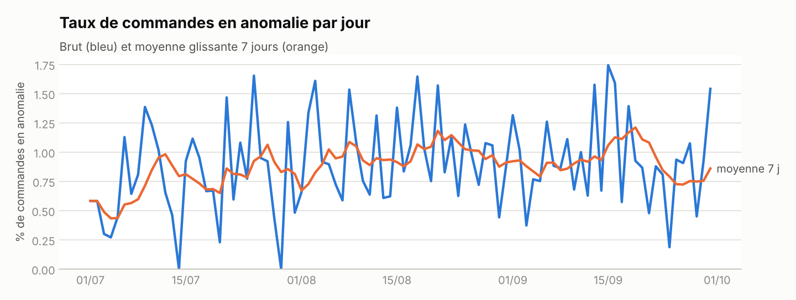
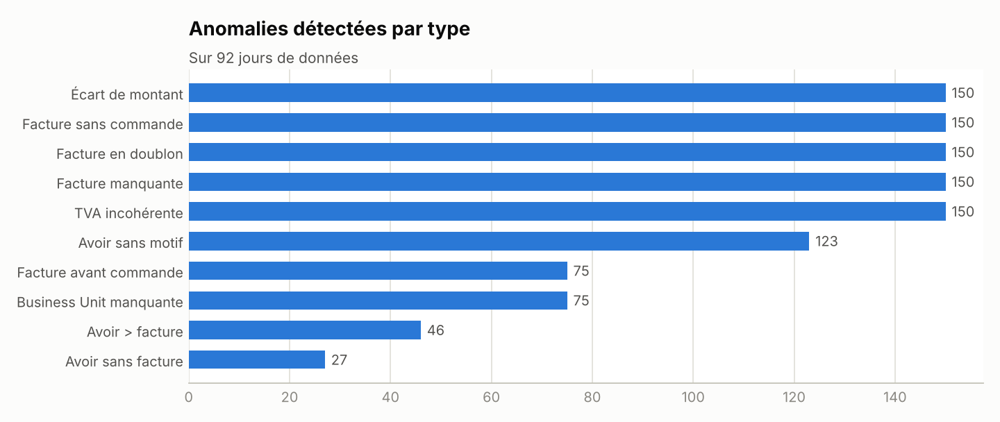
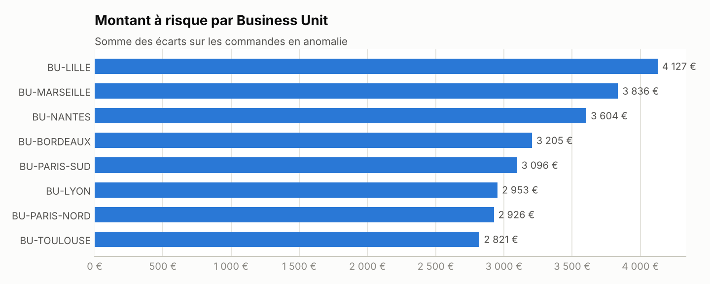
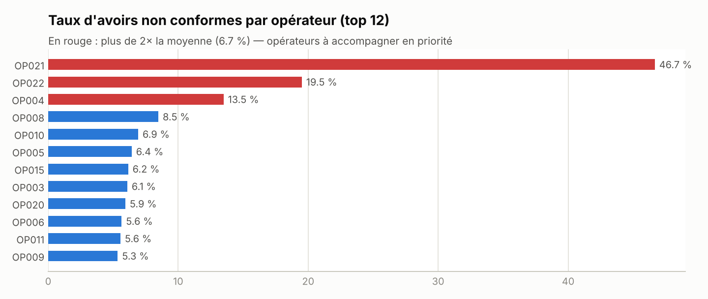

Le pipeline
Une seule commande (python run_pipeline.py) enchaîne toutes les étapes ; en production, elle est planifiée chaque jour (Cloud Run + Cloud Scheduler ou GitHub Actions).
Évolution du taux d'anomalies
Suivre la tendance permet de repérer une dérive (nouvelle intégration, changement de process) avant la clôture.

Où sont les écarts ?


Avoirs : qui accompagner en priorité ?
196 avoirs non conformes sur 2 946. Chaque opérateur concerné reçoit un e-mail avec le détail de ses avoirs à corriger ; le service facturation reçoit un récapitulatif.

Exemples d'e-mails générés : alerte opérateur · récapitulatif facturation
Le contrôle est-il fiable ? Mesure objective
Chaque anomalie a été injectée volontairement et tracée : on mesure ce que le pipeline retrouve (rappel) et s'il signale à tort (précision). 150 écarts d'arrondi de ±1 centime ont aussi été injectés : ils sont correctement ignorés grâce à la tolérance métier.
| Type d'anomalie | Injectées | Détectées | Rappel | Précision |
|---|---|---|---|---|
| Doublon facture | 150 | 150 | 100.0 % | 100.0 % |
| Ecart montant | 150 | 150 | 100.0 % | 100.0 % |
| Tva incoherente | 150 | 150 | 100.0 % | 100.0 % |
| Facture manquante | 150 | 150 | 100.0 % | 100.0 % |
| Facture orpheline | 150 | 150 | 100.0 % | 100.0 % |
| Motif manquant | 123 | 123 | 100.0 % | 100.0 % |
| Bu manquante | 75 | 75 | 100.0 % | 100.0 % |
| Date incoherente | 75 | 75 | 100.0 % | 100.0 % |
| Avoir superieur facture | 46 | 46 | 100.0 % | 100.0 % |
| Avoir orphelin | 27 | 27 | 100.0 % | 100.0 % |
Règles de qualité des données
| Règle | Table | Sévérité | Contrôlées | En échec | Statut |
|---|---|---|---|---|---|
| Identifiant de commande unique | orders | BLOQUANT | 50 000 | 0 | OK |
| Business Unit renseignée | orders | MAJEUR | 50 000 | 75 | KO |
| Montant de commande strictement positif | orders | BLOQUANT | 50 000 | 0 | OK |
| Numéro de facture unique | invoices | BLOQUANT | 50 150 | 0 | OK |
| HT + TVA = TTC (tolérance 2 centimes) | invoices | MAJEUR | 50 150 | 150 | KO |
| Taux de TVA dans le référentiel (5,5 %, 10 %, 20 %) | invoices | MAJEUR | 50 150 | 0 | OK |
| Montant d'avoir strictement positif | credit_notes | BLOQUANT | 2 946 | 0 | OK |